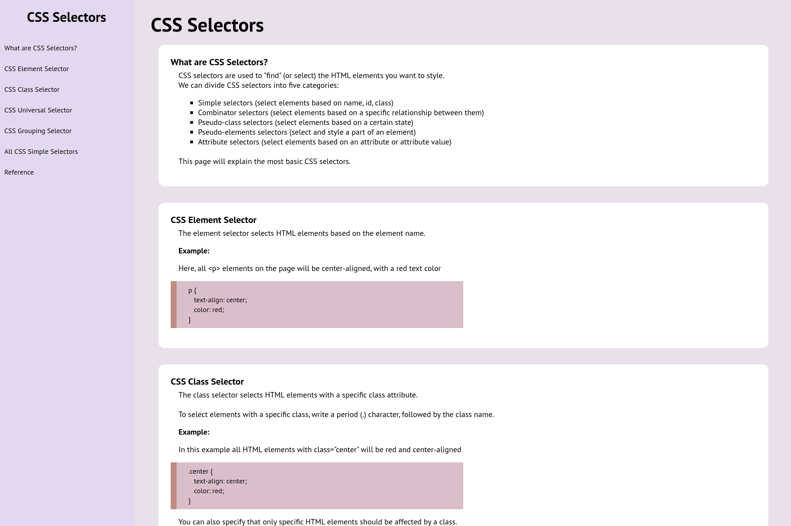
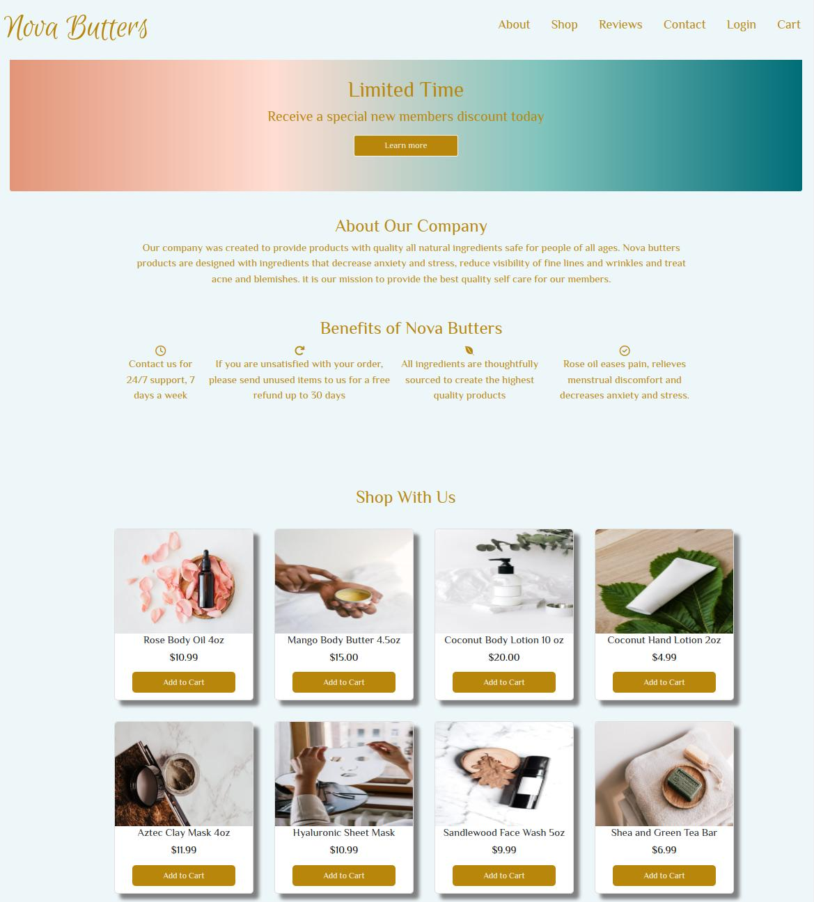

Projects



Frontend Developer
Hello! I'm Kendra Ward, a commited and enthusiastic frontend web developer with a passion for building strong and responsive websites. I have developed my skills through various personal projects, utilizing technologies such as HTML, CSS, JavaScript and Bootstrap. I have an eagerness to continue learning all that I can to stay up to date with new technologies and to build upon my skill set. I look forward to the future and am excited about the opportunities to work and collaborate on innovative projects.